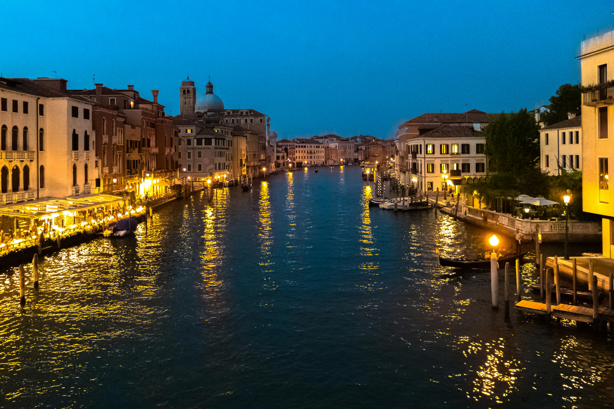

Spain
La Sagrada Familia
Often considered one of the most beautiful buildings in the world, La Sagrada Familia is a must-see attraction for anyone visiting Barcelona. Designed by the praised Catalán architect Antoni Gaudí, this magnificent cathedral boasts three gorgeous façades representing parts of the life of Christ. Embellished with columns representing branching trees, and multicolored stained glass windows, the interiors of the church resemble a magical forest.
Thanks to its sheer beauty, and cultural importance — the building is the perfect synthesis of Gaudí’s architectural evolution —, La Sagrada Familia was listed as a UNESCO World Heritage Site in 2005.
Royal Palace (Palacio Real)
The Royal Palace (Palacio Real), is the official residence of the Spanish royal family in Madrid, although now used only for state ceremonies. Built on the site of the old Alcázar, the Moorish castle, which was destroyed by fire in 1734, the royal palace takes visitors on a journey through Spain’s history. In fact, the old city wall around this area can still be seen.
Comprising over 3000 rooms and built in the form of a square, the alluring Palacio Real was inspired by sketches made by Bernini for the construction of the Louvre Museum, in Paris.
Ciudad de las Artes y las Ciencias
Regarded as one of the “12 Treasures of Spain”, Ciutat de les Arts i les Ciències is one of the main attractions of Valencia. This cultural and architectural complex was developed to bring in more tourism to the city, and it soon became one of Valencia’s most instantly recognizable landmarks.
Entirely designed by the Spanish architects Santiago Calatrava and Félix Candela, this futuristic and eye-popping complex took nearly a decade to be completed. The City of Arts and Sciences houses an interactive museum of science (Museu de les Ciències Príncipe Felipe), an IMAX Cinema, a planetarium and laserium (L’Hemisfèric), an opera house and performing arts center (Palau de les Arts Reina Sofia), and the largest oceanographic aquarium in Europe (L’Oceanogràfic).
Greece

Santorini
Santorini is the attractions in Greece that is a volcanic island in the Cyclades group of islands of Greece. This place is famous for its fantastic scenery, stunning sunsets, white houses are often laundered. Fira is Santorini’s capital, and this place is the Venetian and Cycladic architecture of the marriage. Santorini has a white stone Street, the bustle of visitors who buy souvenirs in the shops, as well as hotels and cafes. The most remarkable of this place is its sticking to the edge of a cliff as high as 400 meters (1,300 ft).
Mykonos
Mykonos attractions popular among cosmopolitan islands of Greece and was widely acclaimed as one of the tourist attractions in Greece. Mykonos town (Chora) is a stunning white town with small streets and whitewashed in various line the streets. This place is also famous for its beaches and nightlife are diverse and intense as you can see in the many bars and nightclubs.
Delphi
n ancient times, Delphi is home to the shrine and oracle of Apollo in the religion of Greece. The ancient theater of Delphi was built on a hill, which gives the audience the view throughout the sanctuary and spectacular views. Attractions in Greece it was originally built with only 4 seats, and could accommodate up to 5,000 spectators. Now this place is one of the major tourist attractions in Greece.
Italy

Colosseum
This huge amphitheater, the largest of its kind ever built by the Roman Empire and the largest of their constructions to survive, remained a model for sports facilities right up to modern times. Built by Vespasian in 72 CE and enlarged by the addition of a fourth story by his son, Titus, the Colosseum was a venue for public spectacles and shows - even mock sea battles.
A wooden floor that was 83 by 48 meters covered two additional underground stories with tunnels, rooms, cells, and passages that provided space for gladiators, workers, wild animals, and storage.
Florence Duomo Santa Maria del Fiore
Regarded as one of the finest cathedrals in the world, the Duomo Santa Maria del Fiore, or the Cathedral of Santa Maria del Fiore, dominates the Florence skyline. The cathedral was built between the 13th and 15th centuries, with the most famous piece being the extraordinary dome, completed by Filippo Brunelleschi in 1434.
The cathedral's bell tower stands close beside the cathedral in Piazza del Duomo, covered in the same patterned marble typical of Tuscan Romanesque architecture. Designed by Giotto, the campanile stands 82 meters tall, and you can climb the 414 steps up to a viewing platform with fantastic views of the city and the dome.

The Grand Canal in Venice
A gondola ride through the canals of Venice is a tradition that travelers have been enjoying for centuries. Venice is a city of islands, and the canals have long been the city's main streets, connected by a labyrinth of narrow passageways.
The Grand Canal is the largest and most famous of these waterways, cutting a wide S-shaped route through the city. Along its sides are the grandest of the palaces once owned by the wealthiest and most powerful families of the Venetian Republic. The best way to see many of the grand palaces, whose fronts face the water, is from a Vaporetto ride along the Grand Canal.